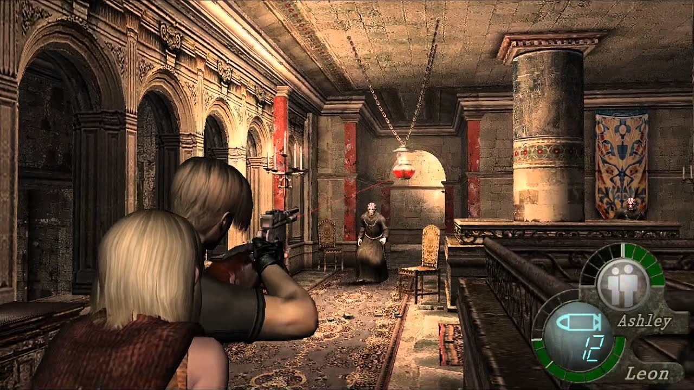

Web JaisonOtalvaro © 2022 All rights reserved
De muchas definiciones podemos resumir que "Un videojuego es una aplicación interactiva orientada al entretenimiento que, a través de ciertos mandos o controles, permite simular experiencias en la pantalla de un televisor, una computadora u otro dispositivo electrónico."
La diversión no es solo para lo más pequeños, ya que los videojuegos llevan muchas décadas de existencia y han sido sinónimo de entretenimiento para muchas generaciones, desde aquellas primeras consolas comerciales como la Atari 2600, hasta las potentes consolas de última generación como la Play Station 5 ó la Xbox series X y series S.
Nos remontaremos a la primera generación de consolas, donde hace aparición el Atari Pong o el Magnavox Odyssey a principios de los 70's, pero rápidamente llega la segunda generación, a mediados de los 70's con consolas más destacadas como Atari 2600, Atari 5200, Intellivision de Mattel, Colecovision y la Arcadia 2001. Se destacan juegos populares como Pac-Man, Space invaders, Frogger, entre otros.
La tercera generación llega en los cominezos de los 80's, conocida como "la era de los 8 bits", las grandes marcas japonesas se solidificaron con la Famicon (Nintendo Entertainment System en América) o la Sega Master System. Los juegos de 8 bits fueron tan populares que no solo se jugaban de forma domestica sino que todos los jóvenes y no tan jóvenes de esos tiempos acudían a un concepto también algo ya olvidado a los “arcades” lugares donde los mejores videojuegos tuvieron lugar convirtiendo en clásicos a las Teenage Mutant Ninja Turtles 2, Double Dragon, Mega Man, Simpsons y muchos más.
A finales de los 80's y principios de los 90's llega la cuarta generación de consolas, con videojuegos a 16 bits. Algunas de las características que distinguen la cuarta generación de consolas son los microprocesadores de 16 bits, controles con múltiples botones, audio estéreo con múltiples canales y una variada paleta de colores que lo cambio toda la experiencia visual para los gamers de aquella época. Las consolas más populares fueron la SuperNES, la Sega Genesis y la Neo-Geo. La cantidad de videojuegos para esta generación es enorme, para todos los gustos, desde puzzles, hasta complejos RPG "Role Playing Game", ejemplos como Chrono Trigger, DonkeyKong Country, Sunset Raiders, The Legend of Zelda, etc.
En el año 1994 con el lanzamiento de la Sega Saturn y la Sony Play Station con tecnología de 32 bits, da comienzo a la quinta generación de las consolas de videojuegos, pasando por también por los 64 bits de la Nintendo 64, la época abre paso a entornos tridimensionales, estas consolas revolucionaron el mundo de los videojuegos en los 90's, señalan un antes y un después.
Posteriormente, a finales de los 90's, comienza la sexta generación con la llegada de la Sega Dreamcast y la Play Station 2. Esta última convirtiéndose en "la consola más vendida de la historia", con más de 155 millones de copias vendidas. Videojuegos que se destacan en esta generación, God of War, Need for Speed Most Wanted 2, Resident Evil 4, Final Fantasy X, Metal Gear 3, son solo algunos ejemplos.

La séptima generación de consolas, comienza entre el 2005 y 2006, con la introducción de la Xbox 360, seguida de las consolas Play Station 3 y la Nintendo wii. las caracteríaticas de éstas es la implementación de tecnología multinúcleo en la unidad central de procesamiento, el uso del formato Blu-ray, mandos inhalámbricos y con sensores de movimiento. Algunos videojuegos muy recordados de la época lo fueron Call of Duty Modern Warfare 2, Skyrim, Uncharted, Batman Arkham City, The last of us, Heavy Rain, entre otros. Las tres consolas dominaron el mercado durante esta época, aunque vale decir que fueron muy buenos años para las portátiles, ya que fueron lanzadas algunas de las plataformas más representativas como la PSP y la Nintendo DS, que ha vendido a la fecha 154 millones de unidades.
Una de las generaciones que más tiempo ha durado, ha sido la octava generación, desde el lanzamiento de la Nintendo Wii U en el 2012 y posteriormente, en el 2013, con la PlayStation4 y la Xbox One, hasta finales del 2020. En esta generación, las consolas se convierten en centros de entretenimiento, donde ver películas y series, hacer streaming y disfrutar de videojuegos en calidad Fullhd (1080p) a 30 fps "frames per second", con gráficos muy detallados, se destacan juegos como Horizon Zero Down, Grand Theft Auto V, Red Dead Redemption 2, Final Fantasy XV, Ghost of Tsushima y muchos más.
Por último, la novena generación que data desde otoño del 2020 con la aparición de la Play Station 5 y la Xbox series X, las cuales están diseñadas para poder correr los videojuegos a resoluciones 4K, con tecnología Ray Tracing y con la posibilidad de subir el rendimiento hasta los 120 fps (según el título). El formato físico comienza a desaparecer, ya que casi todo se lleva a cabo en la nube, el uso de internet es el eje central. Agunos videojuegos destacados son, GOW Ragnarok, Horizon Forbidden West, Demon's Souls.
Si resumieramos la historia de las generaciones de las consolas de videojuegos en una tabla, tendríamos lo siguiente:
| Generación | Consolas | Títulos destacados |
|---|---|---|
| Primera | Atari Pong, Magnavox Oddysey | Pong, Chase |
| Segunda | Atari 2600, Colecovision | Space invaders, Pac-Man, Frogger |
| Tercera | NES, Sega Master System | Super Mario Bros, Megaman, Zelda |
| Cuarta | SuperNES, Sega Genesis | Chrono Trigger, DonkeyKong Country, Sunset Raiders |
| Quinta | Play Satation, Sega Saturn, Nintendo64 | Mario64, DinoCrysis, Silent Hill |
| Sexta | Dreamcast, Play Station 2, Xbox 360 | God of War, ResidentEvil4, MetalGear3 |
| Séptima | PlayStation3, Xbox360, NintendoWii | Skyrim, TheLastOfUs, Uncharted |
| Octava | PlayStation4, XboxOne, Nintendo Wii U | HorizonZeroDown, Final Fantasy XV, |
| Novena | PlayStation5, XboxSeriesX, Nintendo Switch |
A continuación citaré en un Top 3, la mejores consolas en opinión personal con los videojuegos preferidos en cada una de ellas.
Normalmente, en el mundo de los videojuegos, nos encontraremos abreviaturas que a lo mejor no es de fácil entendimiento para personas no familiarizadas con el tema, por lo cual, se mencionará el significado de algunas de ellas
Significado de algunas abreviaturas:
Aquí apreciaremos los gráficos que ofrece uno de los mejores títulos de mundo abierto de todos los tiempos